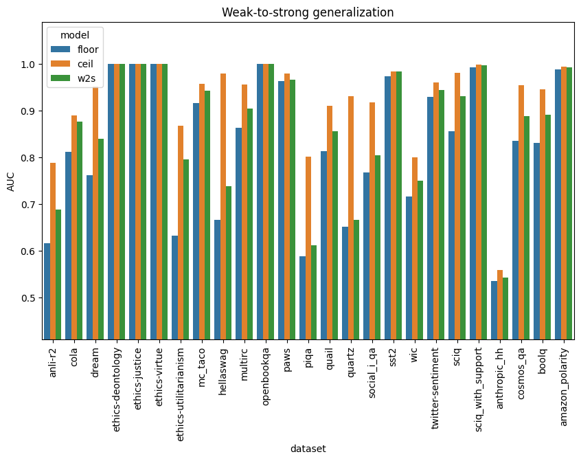
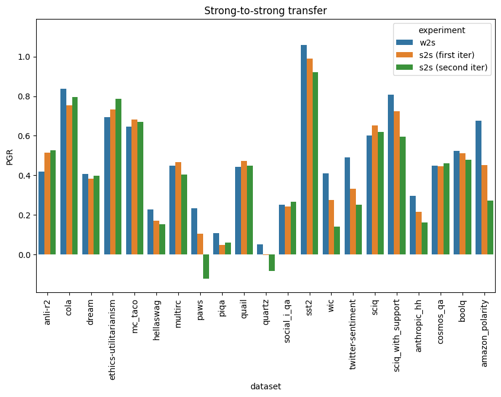
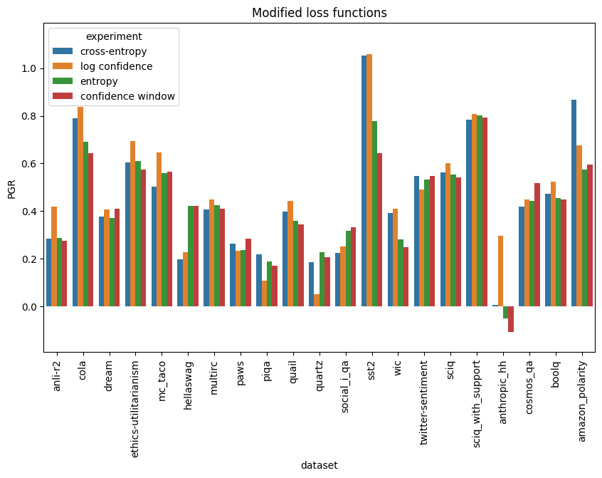
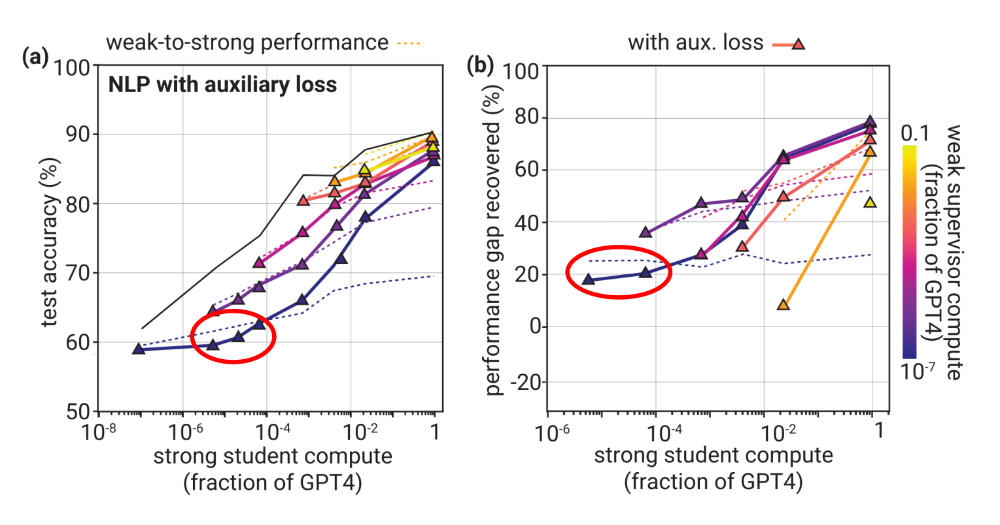
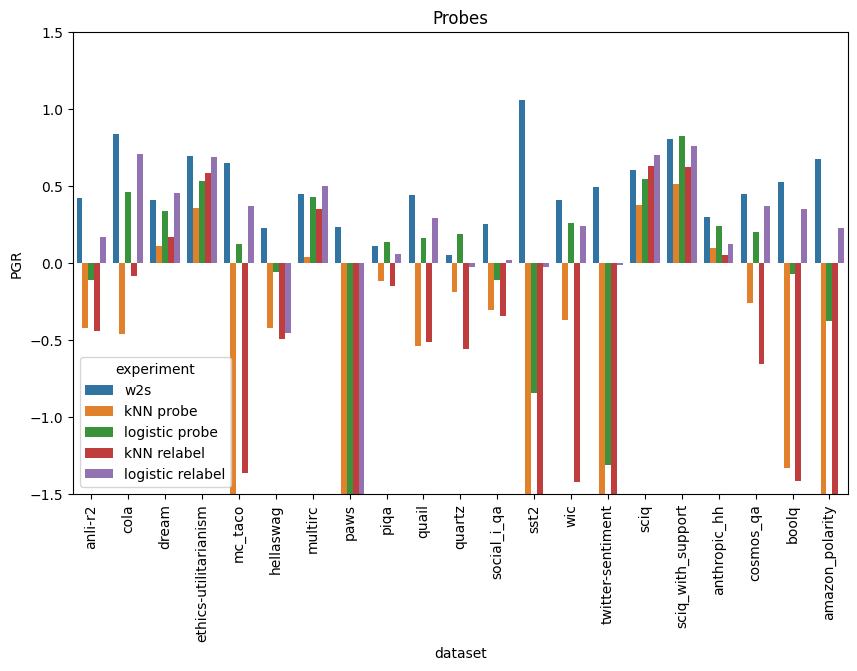
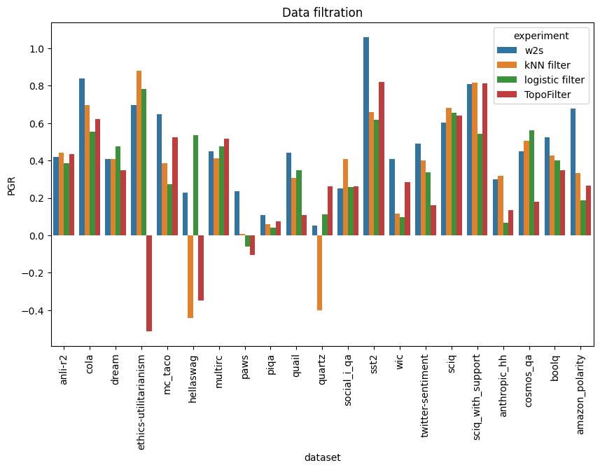
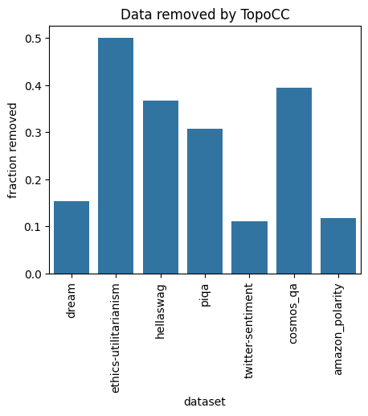
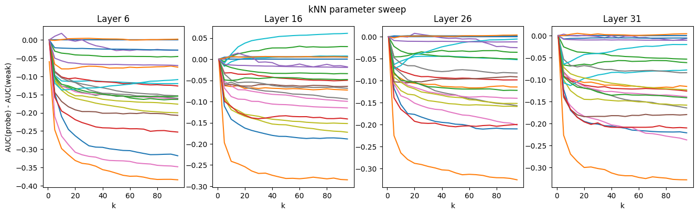
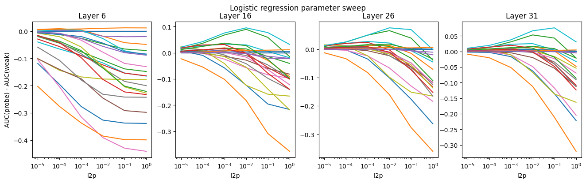

The EleutherAI interpretability team has been investigating weak-to-strong generalization in open-source models. In this post, we report some results on Qwen1.5 0.5B and Llama 3 8B. We observe consistent weak-to-strong generalization across 21 NLP datasets. We also investigate several other modifications to weak-to-strong training, with generally negative results: strong-to-strong training, modified loss functions, and several probe-based experiments. Among these, only the log-confidence auxiliary loss shows possible signs of consistently improving generalization.
Introduction: Weak-to-Strong Generalization
In some circumstances, a stronger student model can outperform a weaker supervisor. Burns et al., 2024 demonstrate weak-to-strong generalization across several tasks and a range of model sizes. Their setup is as follows: 1. The "weak supervisor", a small pretrained language model, is finetuned on a particular task and used to generate predictions (soft labels) on a held-out dataset for that task. 2. The "strong student", a larger pretrained LM, is finetuned on the weak model's predictions. 3. The "strong ceiling", another copy of the larger model, is finetuned directly on the ground-truth labels to provide a baseline.
Burns et al. quantify weak-to-strong generalization in terms of Performance Gap Recovered (PGR):
$$ \begin{align} PGR = \frac{\text{student} - \text{weak}}{\text{ceiling} - \text{weak}} \end{align} $$
(We use ROC AUC as the metric for the student, weak, and ceiling performances.)
In many cases, the strong student performs worse than the strong ceiling, but better than the weak supervisor, so that $0 < PGR < 1$.
Note that a PGR of 1 corresponds to an ideal outcome (the strong model performs just as well as it would have with perfect supervision). In contrast, a strong student that "succeeds" in perfectly imitating its supervisor, including its flaws, would obtain a PGR of 0. (This is not the same as overfitting to individual data points; PGR is evaluated on a separate test set.)
Therefore, weak-to-strong generalization depends on the strong student not being too good at obtaining low predictive loss. Burns et al. find that, at least in some cases, the student eventually "overfits" to the supervisor and ground-truth performance starts to decrease by the end of training.
Motivation
This setup is intended to simulate a future situation in which human supervisors provide imperfect training data to a superhuman model. Ideally, the model would learn the intended task and ignore the flaws in training data, but it could in principle obtain better predictive loss by learning to model the supervisors' inaccuracies as well. Methods to improve weak-to-strong generalization could also improve scalable oversight in this setting, although there are various possible disanalogies.
Interpretation
Burns et al. interpret weak-to-strong generalization in terms of saliency: some tasks are already salient to the (pretrained but not yet finetuned) strong model. This makes them easy to learn, whereas the weak model's imperfect heuristics may not be as salient.
We observe that this is somewhat similar to regularization methods, which sometimes have a nice Bayesian interpretation, with the regularizer corresponding to a prior that favors regular models. In the case of weak-to-strong generalization, the data provides stronger evidence for the weak model's heuristics than for the ground truth, but the student has a higher prior on the ground truth. This perspective informs some of our experiments.
Setup
We use the following models: * Strong: Llama3 8B * Weak: Qwen1.5 0.5
All models are trained for 3 epochs. Strong models are early-stopped based on ROC AUC on a validation set of weak predictions. Note that we have four dataset splits in total: * Weak training set (ground truth used to train supervisor) * Strong training set (weak predictions used to train student) * Validation set (weak predictions used to early-stop student) * Test set (ground truth used to evaluate all models and probes)
Models are finetuned with LoRA (rank 8). We use gradient accumulation with an effective batch size of 32 and a minibatch size of 1. We use ADAM, with learning rates 5e-4 for the weak model and 8e-5 for the strong model. Except where otherwise specified, we use cross-entropy loss with an auxiliary log-confidence term ($\alpha=0.5$).
We train on the 22 NLP datasets from Burns et al., including separate copies of SciQ with and without supporting evidence. We also include two additional datasets: * Anthropic HH * Amazon Polarity
for a total of 25, although four of these are uninformative due to all of our models reaching perfect performance.
In addition to the basic setup, we try various interventions: * Strong-to-strong training * Loss functions: * Cross-entropy * Auxiliary log-confidence * Auxiliary entropy * Confidence window * Activation probes (kNN and logistic regression): * Probe predictions * Probe-to-strong training * Data filtration
Weak-to-Strong Generalization
We see clear weak-to-strong generalization ($PGR > 0$) across all datasets, except for four (three of the ETHICS datasets and OpenBookQA) where all three models perform at above .999 ROC AUC. We exclude these four datasets from other results reported below.

Strong-to-Strong Training
After training the strong student, if PGR on the strong training set is positive, we can use the student to improve its own training data. We can then use these improved labels to train a fresh copy of the student, in the hopes of obtaining better performance.
We can think about this in terms of saliency and regularization, as a way to encourage the pretrained strong model to stay closer to its priors while still learning the task. More directly, it should put a limit on "overfitting": even if the second copy of the student imitates its training data exactly, it will do no worse than the first copy, and in practice we can hope that it overfits less than that and does better.
(In the limit, after many iterations of this, we might expect the student to converge to whatever function is most salient to it, whether or not that has any correlation to the original task.)
We do two iterations of this (relabeling the strong training set again after the first iteration), and find that performance does not consistently improve relative to the original student:

Modified Loss Functions
We tried three modifications to cross-entropy loss when training the strong student. None are convincingly better than cross-entropy:

Auxiliary log-confidence loss
Burns et al. find that, on some tasks, an auxiliary loss term can reduce the amount of "overfitting" to the supervisor by encouraging the student model to be confident. The effect of the auxiliary term, in its simplest form, is equivalent to averaging the supervisor soft labels with the student's hardened current predictions:
$$ \begin{align} L_{\text{conf}} &= \text{CE}(f(x), (1-\alpha) \cdot f_w(x) + \alpha \cdot \hat f_t(x))\\ &= (1-\alpha) \cdot \text{CE}(f(x), f_w(x)) + \alpha \cdot \text{CE}(f(x), \hat f_t(x)) \end{align} $$
where $f(x)$ is the student's prediction, $f_w(x)$ is the weak supervisor's label, and $\hat f_t(x)$ is the hardened label $I[f(x) > t]$ for a threshold $t$. (We set $t$ adaptively to the median of the most recent 32 predictions.)
Note, however, that this auxiliary loss does not seem to have a large effect in the range of model sizes we are working with:

(from Burns et al. Figure 5)The circled areas should approximately correspond to 8B strong and 0.5B weak models, assuming GPT-4 is in the vicinity of 2T parameters and using the approximations
$$ \begin{align} \text{compute} &\propto N_{\text{params}} \times N_{\text{tokens}}\\ N_{\text{tokens}} &\propto N_{\text{params}}\\ \implies \text{compute} &\propto N_{\text{params}}^2 \end{align} $$
Our own results indicate that the log-confidence loss may have a small positive effect on models at this scale, although the evidence is weak. Log-confidence performs better than cross-entropy on 16 out of 21 datasets (excluding those where performance saturates). A one-sided paired $t$-test is not very significant (at $p=.135$), nor is a one-sided paired Wilcoxon signed-rank test at ($p=.079$), indicating that there is not very strong evidence for a positive mean or median effect (respectively) across datasets. In other words, while log confidence may improve or harm performance on particular datasets, we have only weak evidence that the effect is positive for a typical NLP dataset similar to those we use.
We also looked at some alternative losses:
Entropy loss
If we use the student's predictions as soft labels instead of hardening them, the auxiliary term becomes equivalent to an entropy penalty on the student:
$$ \begin{align} L_{\text{entropy}} &= \text{CE}(f(x), (1-\alpha) \cdot f_w(x) + \alpha \cdot f(x))\\ &= (1-\alpha) \cdot \text{CE}(f(x), f_w(x)) + \alpha \cdot \text{H}(f(x)) \end{align} $$
Confidence-window loss
The loss function in this case is just cross-entropy, but we only train on datapoints that the student is unconfident about. Specifically, we exclude datapoints where $|f(x) - \tfrac12| > t$, where $f(x)$ is the student prediction and $t$ is a hyperparameter. In the experiments shown here, we set the threshold $t$ to the median confidence of the weak labels.
Probes
We train two kinds of probes -- $k$-nearest neighbors and logistic regression -- on the pretrained strong model's activations and the weak model's predictions. Both of these probes have a hyperparameter ($k$ and the L2 penalty, respectively) which can be increased to regularize more strongly (biasing more towards whatever is salient in the activations).
We use $k=50$ for kNN, and an L2 penalty of 1e-2 for logistic regression.
We use activations at layer 16 (out of 32) of Llama 3 8b.


We show results above for three kinds of experiment with these, all of which perform poorly compared to vanilla weak-to-strong training. The probe experiments produce poor results on many datasets, while occasionally outperforming the strong student on others.
Note that the first graph cuts off some datapoints which had extremely low PGRs.
Probe predictions
In these experiments we fit probes to the strong model's activations on the strong training set, then evaluate them on the test set.
Filtering
In the filtering experiments, we identify data points where the probe strongly disagrees with the weak labels and drop them from the training set for the student.
In addition to kNN and logistic regression, we use TopoFilter, with $k=50$ for both steps.
We remove the highest-disagreement 10% of data each time (adjusting the $\zeta$ parameter of TopoFilter as necessary), except for seven datasets where the first step of TopoFilter (TopoCC) already removed >10% of data:

Relabeling
In these experiments, we fit the probe to the strong model's training set and obtain its predictions on that same training set. We train the strong student on the probe's predictions instead of the supervisor's. As with strong-to-strong training, the idea is to lean harder on the strong model's inductive biases while still making use of all of the data.
Layer and parameter choice
Varying $k$ and the L2 penalty, and using activations from layers closer to the beginning and end of the model, we don't find any combinations that seem obviously better than those used above. While some datasets seem to see gradually increasing kNN performance above $k=50$, most of them steadily degrade as $k$ increases. Logistic regression performs best around a penalty of 1e-2, when it works at all. The middle-layer activations seem to perform a little better than the early or late layers.
Here, we plot the difference between the ROC AUC for the probes and the ROC AUC of the weak labels:


Discussion
While the basic form of weak-to-strong generalization appears consistently across different NLP tasks, none of our interventions consistently improve the strength of generalization. These results suggest that vanilla weak-to-strong training may already be close to eliciting everything the strong model "knows" about these tasks.
Results seem to vary strongly across datasets. This is reminiscent of some of the findings in Burns et al., such as weak-to-strong generalization for NLP tasks and chess but not reward modeling, or effectiveness of the auxiliary log-confidence loss for NLP tasks (and large models) but not chess (or smaller models).
In this vein, it is worth noting that our negative results may not generalize to larger models, where (for instance) log-confidence loss apparently becomes much more effective per Burns et al.
This lack of consistency across tasks and model sizes underscores the need for a "validation set" in the analogous setting of superhuman models supervised by humans. Weak-to-strong generalization is not itself a complete solution to scalable oversight. Even if a model happens to generalize in the desired direction, this fact needs to be verified, which requires a ground-truth signal more reliable than naive human supervision.
Code
The code used for these experiments can be found in our GitHub repository.